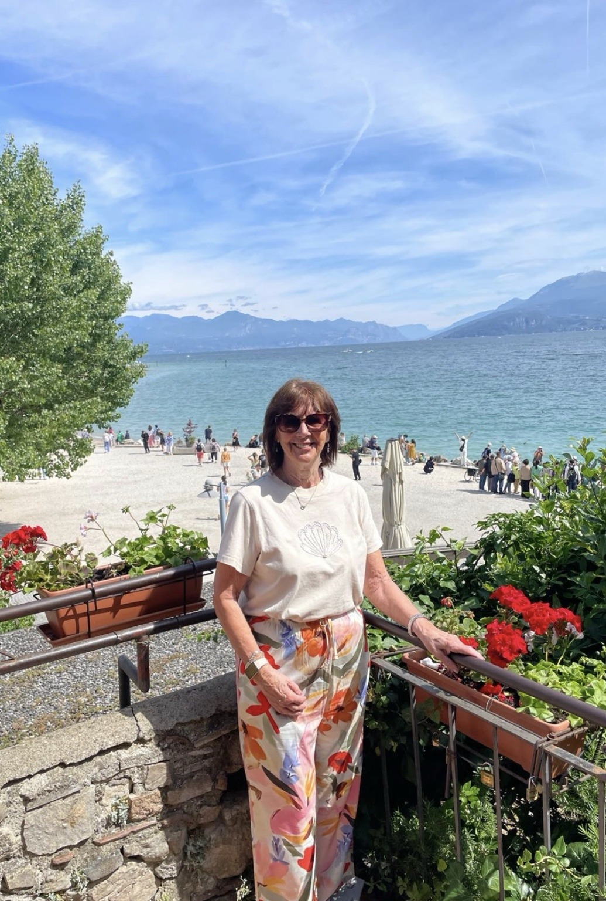
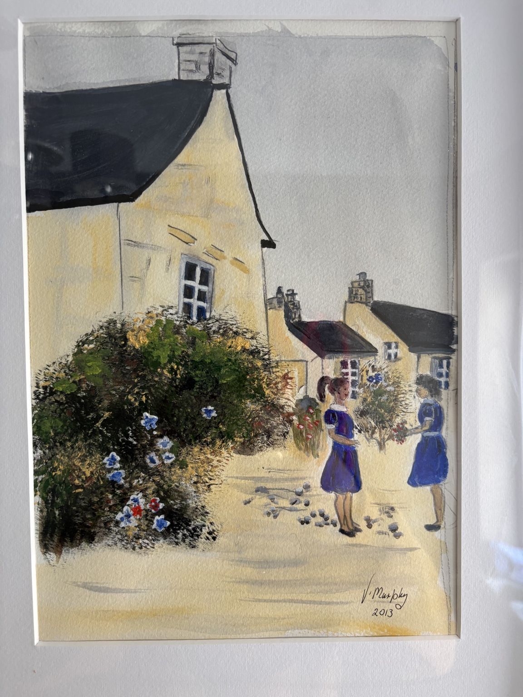

Meet V. Murphy
Painting began simply as something she enjoyed.
Over many years, V. Murphy created a personal collection inspired by places, architecture, colour and everyday scenes that caught her eye.

The artist behind the collection
Made for the pleasure of making.
The paintings were never intended to become a commercial collection. They accumulated over time — pieces made because a particular place, colour, composition or idea caught her interest.
Today, although V. Murphy no longer paints, around 20–30 original works remain. V. Murphy Art Studio was created by her family to preserve that collection, reproduce selected works faithfully, and give them an opportunity to find new homes.
A personal collection, shared for the first time.

An honest catalogue
What we know — and what we do not.
Where an original title, location or story is unknown, we say so. Descriptive catalogue titles are used to organise the collection rather than to invent a history around the work.
The signed 2013 village scene provides one clear point in the timeline, while the wider archive continues to be photographed and catalogued.